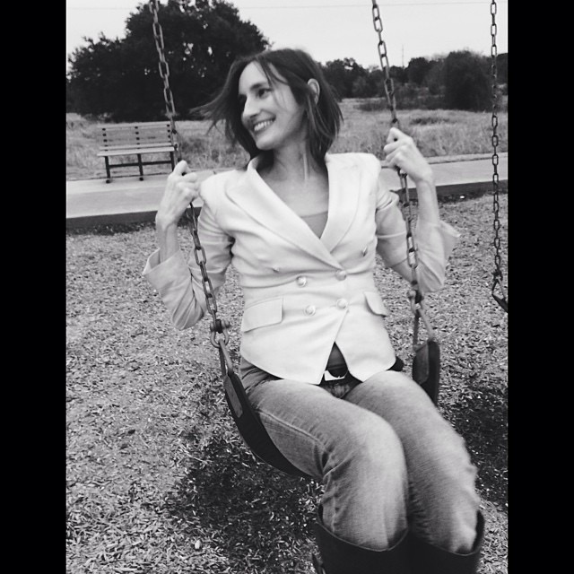
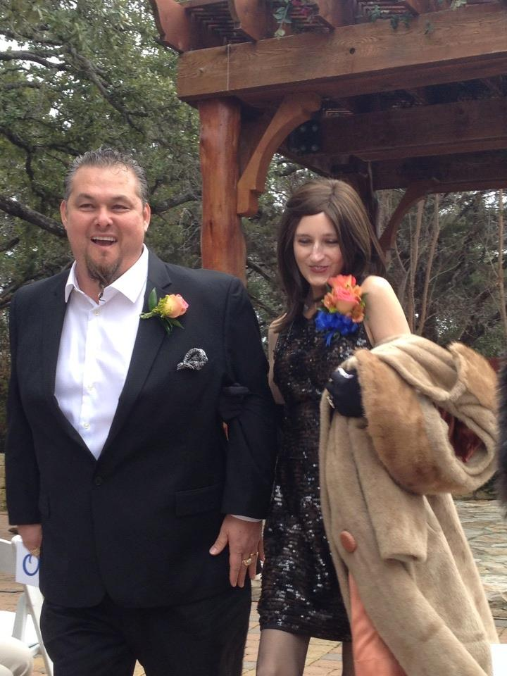
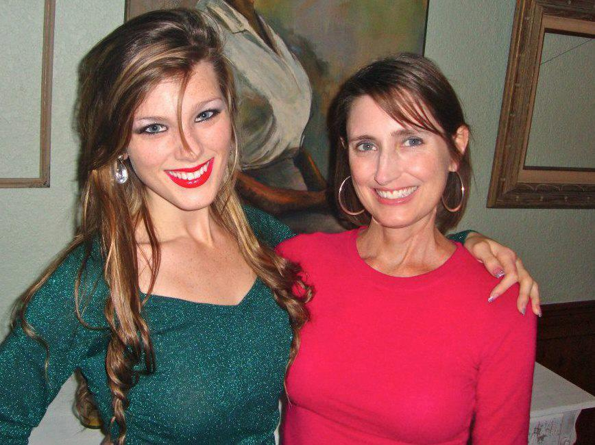
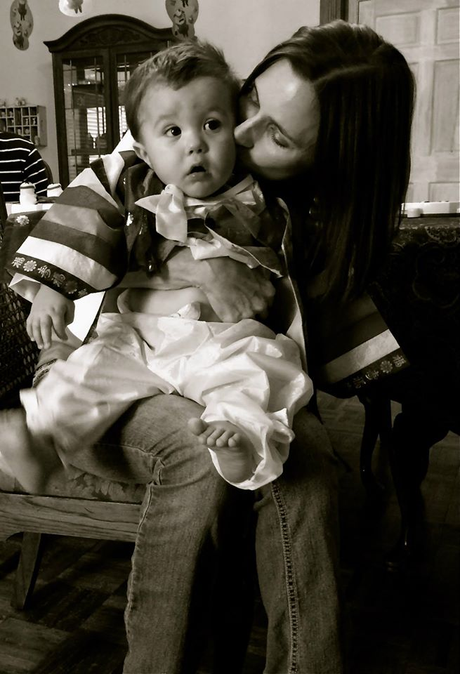
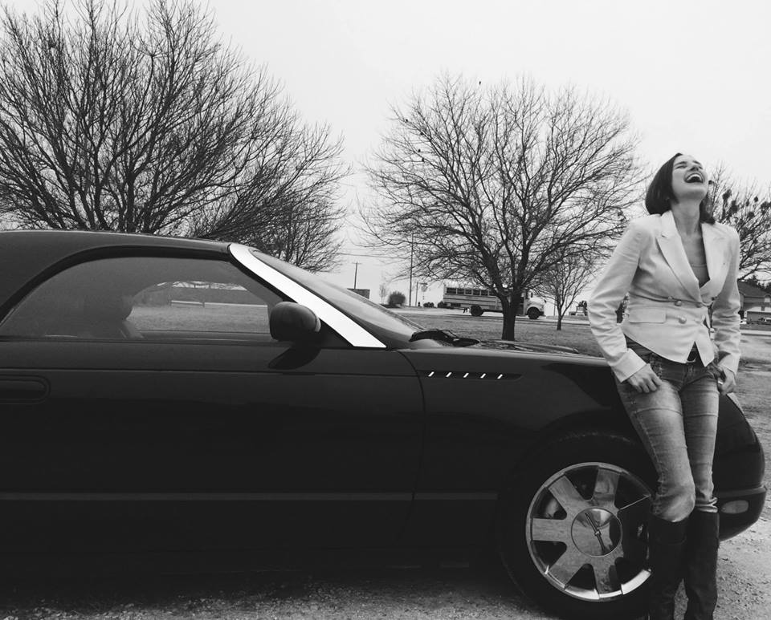
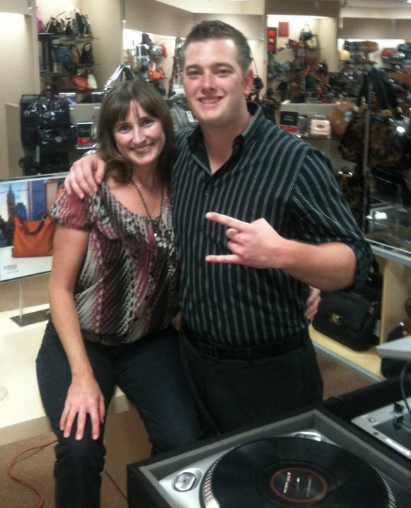
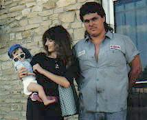
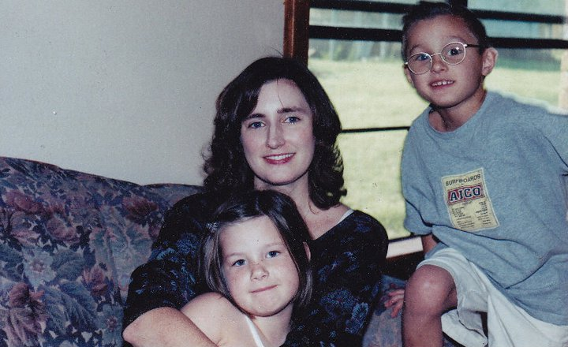

Susan Ruth Mayo was born on October 6, 1966 in Tacoma, Washington to Grant Reede and Lynda Naegle Woodbury. After a courageous battle with cancer, she passed away peacefully on the morning of August 17, 2014 surrounded by her family.
Susan is survived by her husband, Alfred George Mayo, Jr.; their sons, Jake Ryan (Jessica) Mayo, Seth Grant (Pamela) Mayo, Luke Arthur Mayo, Max Dillon Mayo, Sam Easton Mayo; their daughter, Song Lynn Mayo; their grandson, Brodyn Wayne Hanson-Mayo; her father, Grant R. Woodbury and her mother, Lynda Naegle Edwards; her brother, Robert Grant (Lori) Woodbury and children, Mandy (Jeromy) Lackey and Alan Woodbury, and many others.
Her early years were spent traveling with her father's military career; she also enjoyed many happy summer vacations with her grandparents, being spoiled by them and riding horses with her cousins in the mountains of Southern Utah. She started writing poetry in elementary school and very early on showed tremendous artistic and creative talent. Susan was a very bright, inquisitive, fun-loving little girl who blossomed into a beautiful young woman. She exhibited this creative talent by publishing many of her poems and illustrations throughout her life. She and her devoted and protective older brother, Robert, had a great relationship. Susan would often say that Robert was the best older brother any sister could ever ask for.
Susan met the love of her life and future husband, Alfred George Mayo, Jr. when she was 16. She met Junior while he was working at his family's service station in Killeen. He claims that he failed Susan's car inspection so that she had a reason to return. The plan worked, and Susan was equally excited that he remembered her name a month after her failed inspection. Realizing that they were each other's soul mates, they married after dating for several years and settled in Killeen to work and raise their six children. Junior and Susan were happily married for over 28 years.
Known by everyone as an unselfish person who taught us by example to truly love and care for others, Susan had many loved ones she cherished. She had a great sense of humor, loved life, learning, and was a free spirited woman who was never afraid to grow. One of her proudest accomplishments was designing, building, and running Mayo Autoworks alongside her husband and sons, Luke and Seth. She also created her own successful online retail business, "Purse Strings Plus." But her proudest accomplishment in life was raising her six children.
Even though she was a busy wife and mother, she made time to share her love of arts and crafts with her children, nieces, nephews and their friends. Art was a way she shared her joy to the world. Her heart would race in eagerness at the start of every new poem, painting, or project. She saw aesthetic significance in details that most of us would miss. Every curve, every shade of gray, every color, every word had its place.
But her greatest work of art is something everyone will miss; her infectious smile. When Susan smiled, even the blind could feel her warmth. During her darkness moments, when she was unable to even speak, she smiled. Her grandchildren will inherit her goodness because that is what her children were raised with. It is her legacy, and words do no justice in explaining it. But everyone who knew Susan knows that they don't need words. Art needs no explanation.
Friendship
breeze by
touch lightly
whisper my name
across the room
leave an impression
run my fingers
drift past like a stray balloon
slide over
get to know me
sing a song
come out to play
write on my wall
strum my guitar
chitchat along the way
through the line
across the miles
over land, over sea
listen closely
close your eyes
reserve a space
remember me
- 
- 
- 
- 
- 
- 
- 
- 